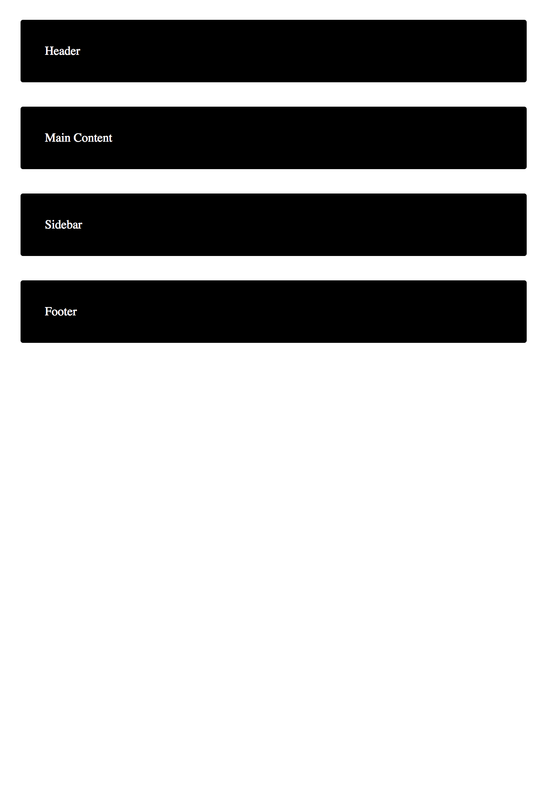

<section>
  <h1 id="requirements">Requirements</h1>
  <hr />
  <p>
    Problems for in-class lab for the
    <a href="https://softuni.bg/trainings/2259/css-advanced-march-2019"
      >“CSS Advanced”</a
    >
    course @ <strong>SoftUni</strong>.
  </p>
  <h2 id="tasks">Tasks</h2>
  <ul>
    <li>
      Copy the code from <strong>Using Grid Named areas</strong> - exercise 3
    </li>
    <li>
      Redefine the grid using Media Queries when the screen has 1024px width
    </li>
  </ul>
</section>
<section>
  <h1>Screenshot</h1>
  
  
</section>
<section>
  <a href="04-solution/solution.html">See the Result</a>
  <a
    href="https://github.com/NedelchoPenev/CSS_Advanced/tree/master/_homeworks/grid/04-solution"
    >See the Solution</a
  >
</section>
